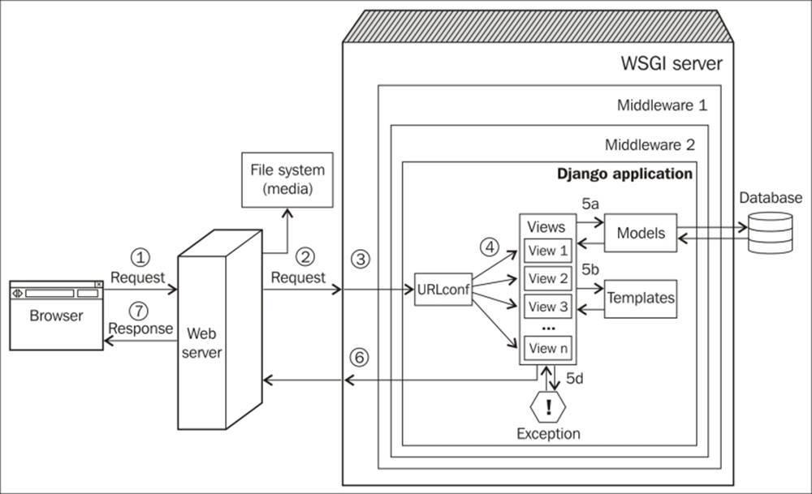

Hello World
CodeTengu Weekly 碼天狗週刊
CodeTengu Weekly 會在 GMT+8 時區的每個禮拜一 AM 10:00 出刊，每期會由三位不同的 curator 負責當期的內容，每個 curator 有各自擅長的領域，如果你在這一期沒有看到自已感興趣的東西，可能下一期就會有了。你也可以瀏覽一下前幾期的內容。
目前的 curator 陣容：
- @vinta - I failed the Turing Test - 科幻迷，最近在讀 The Call of Cthulhu
- @saiday - Imnotyourson
- @tzangms - Oceanic / 人生海海 - 衝動型購物
- @fukuball - ImFukuball - 有新工作了，但歡迎直接挖角
- @mingderwang - Ethereum enthusiast
- @kako0507 - 熱愛嘗試新事物的前端工程師
- @chiahsien - 徵有經驗的 Objecitve-C 工程師，意者請來 Twitter 私訊我
- @hiroshiyui - 歧路亡羊與中年危機的典範
- @uranusjr - Smaller Things - 邊緣人拉到 conference 還是邊緣人
- @kkdai - 態度萬歲 - 喜歡 Golang 的略懂工程師，最近在學機器學習 (疑?)
- @yhsiang
- @johnlinvc - 在 KSP 內登陸月球中
你也可以關注我們的 Facebook、Twitter、GitHub（Open Source 專案）或微博，有很多 Weekly 看不到的內容。有任何建議或疑問也歡迎來 Gitter 聊聊。
 @vinta
@vinta
Python @ Instagram at PyCon 2017
這個 talk 是 Instagram 的工程師分享了他們把 Instagram 從 Python 2.7 / Django 1.3 改寫成 Python 3.6 / Django 1.8 的經驗之談，很有參考價值。除了 unit tests 先行之外，還有一點很重要：只在一個 commit 裡修改多個檔案的同一個 issue，而不是一次修改同一個檔案裡的多個 issues；他們也提到了幾個在改寫的過程中踩過的地雷，不用猜了，第一名就是大家的好朋友：unicode，它會在各種地方突然冒出來甩你幾巴掌。尤其是你必須讓你的 code 同時跑在 Python 2 和 Python 3 的時候，苦啊。
不過原來整個遷移到 Python 3 的工作主要是由 Infrastructure Engineers 負責的啊，帥氣。
延伸閱讀：

Django Middlewares and the Request/Response Cycle
類似之前分享過的 What happens when you type google.com into your browser and press enter?，額外再了解一下自己在用的 web framework 是怎麼處理 requests 和 responses 也是挺有用的啊。
Mastering Apache Spark 2
因為最近在寫 Spark，找到了這個 GitBooks 上的電子書，雖然有滿多章節都還沒寫完，但是裡頭講了不少 Spark 官方文件都沒有提到的內容。推薦給大家。
延伸閱讀：
Google reCAPTCHA - Invisible CAPTCHA
大家可能都用過 Google reCAPTCHA 的 I'm not a robot 和叫你選圖片的 Select all images with xxx，以及更早之前的要你輸入一堆根本就沒有人認得出來的文字或門牌號碼的圖片驗證碼，但是除了以上的驗證方式之外，最近才發現 Google 又推出了一種 Invisible reCAPTCHA。可以直接用「點擊 submit 按鈕」這個動作來取代原本的「點擊 I'm not a robot 的 checkbox」，對使用者來說他並不需要做任何額外的驗證動作，就是按一下 submit 而已。
延伸閱讀：
Bogleheads investment philosophy
這一篇是在講「投資」，跟程式無關。不過我們好像也不是第一次在 weekly 裡講跟寫程式無關的話題啦，讀者應該早就習慣了吼？
這個網站是由一群認同 John Bogle 的投資理念的人建立的，自稱 Bogleheads。約翰柏格就是創立世界上第一檔指數型基金的人。上面的文章都挺好的，例如 Behavioral pitfalls 或 Asset allocation，大家感受一下。不過因為投資其實有不少流派，投機和投資的差別就不說了，Bogleheads 這一派是所謂的「指數化投資」，崇尚被動管理和資產配置，其他還有價值投資、成長投資、技術分析之類的，各有各的擁護者，有些甚至還會互相鄙視。雖然這種文人相輕的現象我們應該也早就見怪不怪啦：軟體工程師的鄙視鏈。
延伸閱讀：
- A Random Walk Down Wall Street - 我當兵的時候有讀過這本「漫步華爾街」，去年 2016 年又出了新版，似乎是時候再讀一次了啊
題外話，因為最近是 Steam 的夏季特賣，雖然沒有人問我，但是我要自己說！如果你不知道要買什麼，就買這些：
 @saiday
@saiday
Scrum does not work here in Asia
雖然通篇沒提到台灣，甚至也不是主要在談論軟體產業，但這篇實在是尖銳且精準。亞洲的某些重點文化跟 Agility 本質上就有排斥反應，是從老闆、主管到員工各階級都會抗拒的那種文化排斥：
- 生活中的所有東西都有階級順序
- 亞洲人對維持和諧這件事非常重視，避免任何衝突發生
- 教育方法不同，一元價值觀跟獨立思考能力的欠缺
- 外包天堂，求快跟省成本的文化
以下這些現象，或許大家可以體會一些？
在 LinkedIn 上看到那些宣稱自己是 Scrum Master 的人同時也有一個 Project Manager 的職務，他們根本沒搞懂 Scrum Master 的角色，也可能他們從頭到尾就不想搞懂，只是想製造一種我們也有跟上了所謂「敏捷開發」的趨勢哦。 Scrum Master 這種不能實際上叫大家去做事的角色，被認為是一種比較低下的職位。
放一個不賦權的 Product Owner，他做出的決定再被那些有真正權力的人推翻，而那些擁有權力的人宣稱自己太忙無法跟開發團隊一起協同工作。
Sprint Planning 變成了一種簽約儀式，沒有資訊交換、沒有談判，其實跟上級交辦的事項根本沒有兩樣。 Daily Scrum 變成了一種每天回報給主管的匯報，而不是可以快速地跟同事進行釐清跟調整的會議。
工作之間沒有透明度，因為大家只會說那些對方想聽的話，甚至願意用加班或欺騙掩飾正在發生的問題，根本的原因是員工都認為自己是那個可以被替換的人，所以不願意曝露出負面消息。
因為教育體系的關係，多數人沒有自我管理能力，希望被清楚地告知任務，以跟隨規則為第一原則，破壞體系的人被群體視為造反。
我曾經有一份工作跑過 Scrum，以當時個人的感受跟這篇文章的標準來看，我們當時做得應該是還不錯吧。那時的團隊成員特色是主動、有利他精神、自重，也不害怕製造衝突因為根本沒有人會覺得被針對。那次之後也對我的工作態度跟方式起了很大的改變。
API 文件就是你的伺服器，REST 的另一個選擇：gRPC
最近衝著 Modern 這個詞在上一門課程 Modern Golang Programming。課程中是用 gRPC 在 Microservice 之間做溝通而在 Web API 的部分還是採用 REST，這讓我感到很疑惑，為什麼不用一套打死？
後來我歸納出來兩者選擇的參考標準
- 想要暴露出來的東西是 resource 就用 REST
- 想要暴露出來的東西是 operation 就用 gRPC (RPC)
如果你對 RPC 沒有很清楚，這篇很不錯： Do you really know why you prefer REST over RPC?
Test Doubles - Fakes, Mocks and Stubs.
單元測試的時候用 Test Double (測試替身) 有兩個主要原因：
- 獨立，不讓依賴元件干擾待測程式的測試結果
- 快
這篇文章介紹了 Test Double 中最主流的三種類型，名詞上比較容易沒搞清楚的是 Mock 跟 Stub 吧，因為多數的 Mock Framework 都會實作 Stub。
开发者所需要知道的 iOS 11 SDK 新特性
本篇為王巍 WWDC 的重點歸納整理，好！
今年 WWDC 對開發者來說最重要的東西我覺得是 Core ML 系列，透過 Apple 提供的工具鍊，開發者可以拿現成的 Model 轉成 Core ML 格式，並且在 Xcode 中被高度整合，使用上非常簡單，匯入之後連 Model 對應的 API 介面都幫你產生好了。
以下是我個人這次 WWDC 覺得也滿重要，不在文章裡面的：
- Swift Codable
- Swift block based KVO
- UIScrollView 有 frameLayoutGuide 跟 contentLayoutGuide property，UIScrollView 的 Auto Layout 有時候真的會搞得很麻煩啊～
- Undefined Behavior Sanitizer
- Xcode 的 breakpoint 終於有自動完成 ...
Functional Programming for Android Developers
作者是一個資深的 Android 開發者，最近在 Elixir 感受到了 Functional Programming 的一些特性跟好處，寫了一篇給 Android 開發者看的 FP 科普文。
這是他上 Fragmented 的 Podcast：083: Learning the basics of functional programing with Anup Cowkur
 @johnlinvc
@johnlinvc
Reddit 怎麼做已讀數計算
計算已讀數聽起來像是一個簡單的功能，但是當達到 Reddit 的規模時，事情就變得複雜了起來。既不能只用一個數字來存 (race condition 超嚴重)， 或是一筆一筆加 (好幾百萬筆，加到天昏地老）。這篇文章介紹了他們怎麼使用 Redis 和 Cassandra 來計算已讀數。
GNU `yes` 工具為什麼會這麼快?
yes 是一個可以一直輸出 y 的工具程式，許多作業系統都有內建。
聽起來是很簡單的程式，不過 GNU 版的卻做了最佳化，讓它輸出 y 的速度高達 10.2GiB/s 。 另一方面 OpenBSD 版的大約是 140MiB/s。背後的奧秘就在於 output buffering，也讓我們看到了簡單的程式也可以寫得很複雜。
當 Container 不再獨立
Container 應該是互相獨立，不會互相影響的。但是作者卻發現兩個簡單的 container 在同一台機器上運作時，效能會大幅降低。作者深入 Kernel 研究原因，最後也找到了真正的成因。
Two Legs Bad
政府網站統一在最下方顯示承包廠商及標案資訊 - 公共政策網路參與平臺
政府的網站絕大部份都是透過標案承包給民間軟體公司製作，但是常常廠商能力不足造成網站安全性問題一堆或是速度緩慢或是動線不流暢，造成民眾對於政府網站總是有著就是落伍的刻板印象。如果能夠要求以後政府網站都可以統一在下方顯示像是「本網站是透過 xxxx 標案，經由 ooo 公司承包製作」資訊，可以讓承包公司會對這網站更有責任感，不再只是只以到達標案需求就好的交差應付心態。